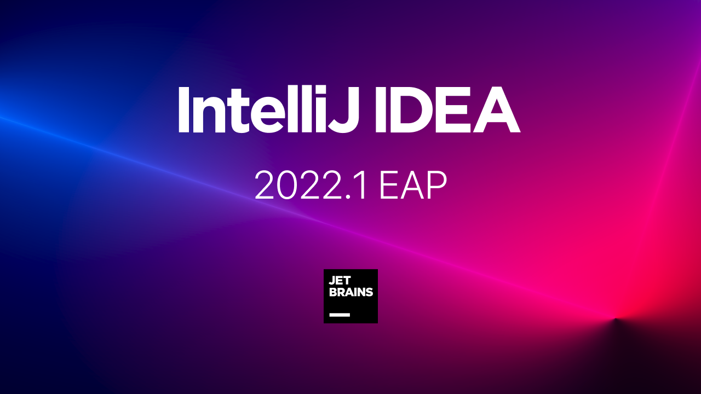

Best Java Tools for Developers in 2022
There are many tools available for Java management. These software ease the entire process of developing, testing and deployment in Java. Here is the list of Top tools with their features and download links.
Monitor the performance of your Java applications with Site24x7 APM Insight. Site24x7 is a SaaS-based all-in-one monitoring solution for DevOps and IT. With Site24x7 APM, you can get a holistic view of your application performance in real-time and debug errors with ease.
Key Features:
- Get a bird’s eye view of Java app performance with application dependency maps
- Support for monitoring individual methods or functions in code using custom instrumentation
- Support for distributed tracing – identify errors across microservices and distributed architecture
- Real-time reports on JVM performance including key metrics like JVM CPU usage,garbage collection, run-time memory, heap memory, with alerting
JUnit is an open source unit testing tool for Java programming language. It is important Java development tool for test-driven development and deployment.
Key Features:
- Preparation of input data and setup/creation of fake objects
- Loading databases with a specific known set of data
- JUnit provides support for writing and running tests
- It provides annotations to identify test methods
- JUnit tests allow writing codes faster, which increases quality

NetBeans is FREE, open-source IDE. It is one of the best Java developer tools which allows developing desktop, mobile and web applications.
Key Features:
- It offers complete support for Latest Java Technologies
- Support for fast & smart code editing
- Helps to write bug-free code
- Rapid User Interface Development

Eclipse is an open-source integrated development environment for Java. It is one of the best core Java tools that offers modern features, large numbers of modeling tools, java testing tools, and development frameworks.
Key Features:
- Model Driven Development
- Easy and seamless integration with JUnit
- Provide Complete Detailed reports
- Eclipse offers the best tooling for JEE projects

IntelliJ IDEA is a multi-purpose IDE which focuses on Java development. It is one of the best Java programming tools that offers advanced support for the web, mobile, and hybrid application development.
Key Features:
- It analyses source code between all project files and languages
- t gives list of the most relevant symbols applicable in the current context
- It allows cross-language refactoring
- It allows user to use static methods or constants easily